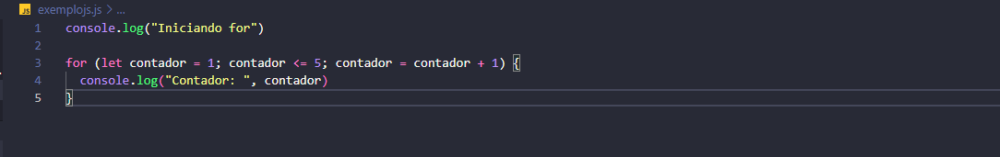

Introdução da Estrutura de repetição
Uma estrutura de repetição é uma lógica que repete as ações de um mesmo bloco de código por um número de
vezes determinado a partir do tipo de estrutura de repetição. São geralmente conhecidos como
loops(laços).
Elas fornecem os mecanismos que permitem que um programa tome decisões, repita ações e
controle o fluxo de execução. Sem elas, um programa seria apenas uma sequência linear de instruções, incapaz
de realizar tarefas complexas ou interagir com o usuário de forma dinâmica.
Exemplo:
Diferença entre os laços de repetições
As estrutuas de repetições (ou looping) são formados por 3 principais elementos, sendo eles: For While e Do While. No qual a explicações sobre os mesmo estão no site.Nessa página iremos falar sobre a diferença entre esses três e o momento a se usar cada um, para que haja um código estruturado e claro.
For
O elemento for se destaca das outras estruturas de repetição por seu fácil controle e sua sintexe breve. Diferente das outras, verifica antes de cada Repetição.
Se a condição for verdadeira, o bloco de código é executado, caso contrário, o loop termina. Executada apenas uma vez, antes do início do loop. Sendo geralmente usada para declarar e inicializar uma variável.
Quando usar:
- Sabe o número exato de iterações: Se você precisa repetir um bloco de código um número pré-definido de vezes, o for é a escolha mais adequada.
- Precisa de um controle preciso sobre o número de iterações: O for permite que você controle exatamente quantas vezes o loop será executado, através da variável de controle.

While
O elemento While é outra ferramenta poderosa para executar um bloco de código repetidamente, mas com uma abordagem um pouco diferente do for.
A condição é avaliada antes de cada iteração. Se a condição for verdadeira, o bloco de código é executado. Caso contrário, o loop termina. Além de que, a inicialização Pode ser feita antes do loop ou dentro do loop.
Quando usar:
- O número de iterações não é conhecido de antemão: Quando você não sabe exatamente quantas vezes o loop será executado, o while é mais adequado.
- A condição de parada depende de um valor que pode mudar durante a execução: Se a condição de parada depende de um valor que pode ser alterado dentro do loop, o while oferece mais flexibilidade.
Do While
A estrutura do-while é uma das ferramentas que temos para criar laços de repetição, ou seja, para executar um bloco de código repetidamente enquanto uma determinada condição for verdadeira.
A principal diferença entre o do-while e o While está em quando a condição é verificada. No While a condição é verificada antes de cada execução do bloco de código. Já no Do While é ao contrário, a condição é verificada após a execução do bloco de código. Isso garante que o bloco seja executado pelo menos uma vez, independentemente da condição inicial.
Quando usar:
- Quando você precisa que o bloco de código seja executado pelo menos uma vez: Por exemplo, em menus onde você quer que o usuário veja as opções pelo menos uma vez antes de escolher sair.
- Quando a condição de parada depende de um valor que só será definido dentro do loop: Por exemplo, em um jogo onde o usuário precisa realizar uma ação antes de poder sair.